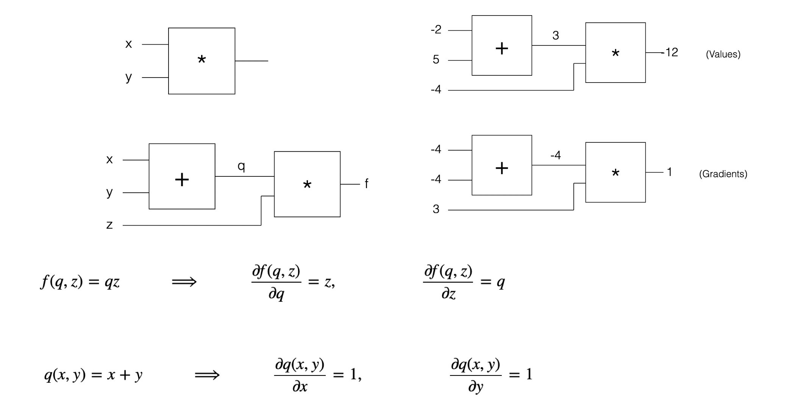
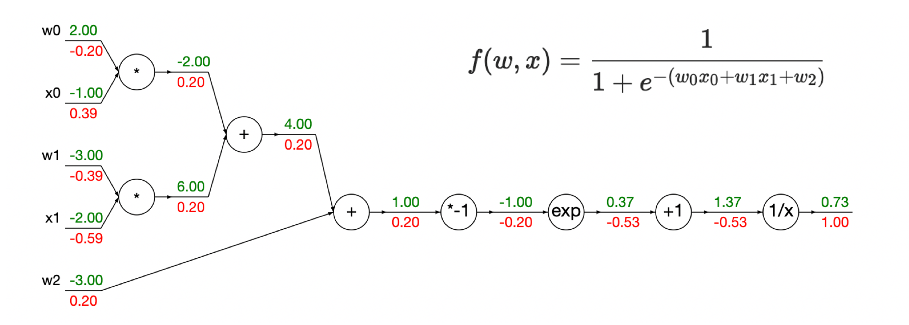
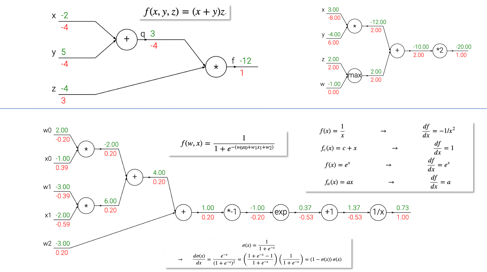

计算图和反向传播（Computational Graphs and Backpropagation）
学习资料
- （0）《深度学习入门——基于 Python 的理论与实践》
我的读书笔记：2021.01.28 和看小说一样流畅的深度学习基础图书
- （1）Hacker’s guide to Neural Networks: http://karpathy.github.io/neuralnets/

- （2）Computational graphs: Backpropagation: https://kharshit.github.io/blog/2018/03/09/computational-graphs-backpropagation

- （3）(CS231n) Backpropagation: Intuitionschain rule interpretation, real-valued circuits, patterns in gradient flow: https://cs231n.github.io/optimization-2/

-
（4）Computing Gradient Hung-yi Lee 李宏毅: http://speech.ee.ntu.edu.tw/~tlkagk/courses/MLDS_2018/Lecture/Graph.pdf
-
（5）CS231n: Convolutional Neural Networks for Visual Recognition https://cs231n.github.io/